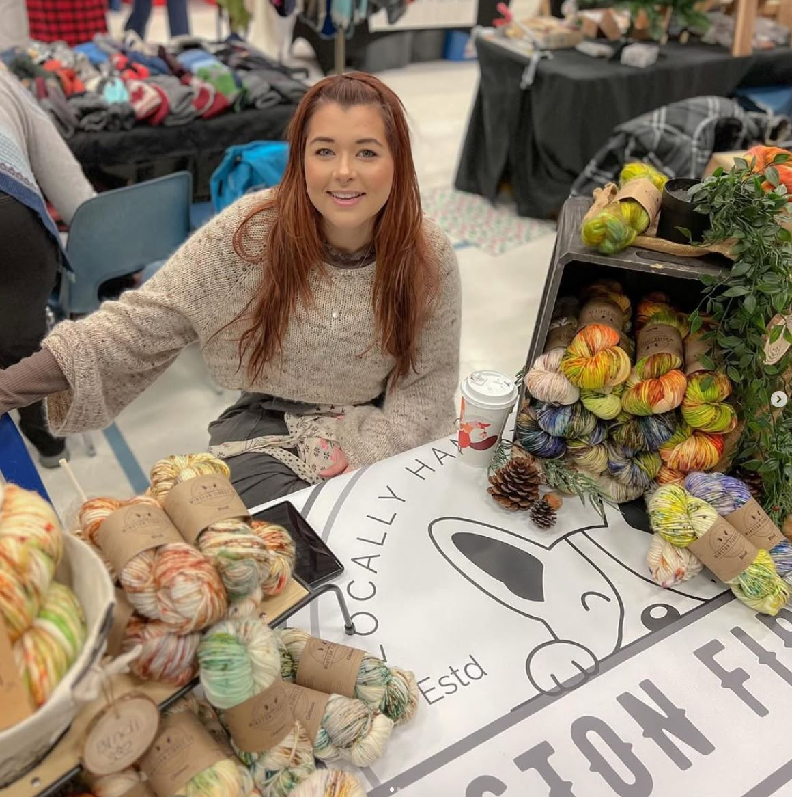
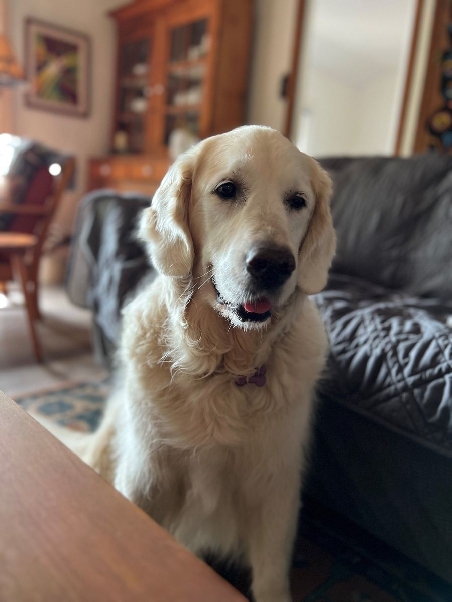

How it started
Winston Fibres Co. opened its doors in 2023, built on a simple idea — that knitters, crocheters, and makers deserve yarn that feels as intentional as the projects they cast on. We started with one dye pot in a home kitchen, a few bases, and a stubborn belief that colour should be joyful.
Today, every skein is still dyed by hand, in small runs, so each one carries a little character. You'll see it in subtle tonal shifts, unexpected pops of contrast, and the kind of variegation that looks different on stockinette than it does in ribbing. We think that's a feature, not a flaw.
Small batch, straight talk.
Dyed in small pots
We dye in runs of 4 to 12 skeins so colours stay rich, repeatable-ish, and honest. No industrial shortcuts.
Fibres worth knitting
Our bases are chosen for hand, drape, and longevity — superwash merino for socks, wool-mohair for warmth, and more.
Proudly Canadian
Everything ships from Canada, and we offer free Canadian shipping on orders over $250 CAD.
Colourways with names
Each colourway has a name and a story. Broody Hen didn't get that name by accident.
The supervisors.
Eight dogs run quality control around here — every dye day has at least one of them underfoot, and each one is the namesake of a yarn base in the shop. Pick a name to meet them.

Bonnie
Bonnie's a leggy blonde Golden Retriever with a nose for trouble — and for mushrooms. She lives for boat rides at the Muskoka cottage, banana slices, a sliver of cheese, and a long ear scratch. Her zoomies are the stuff of legend.
Inspires the Mohair & Silk Lace — light, soft, and a little fluffy.